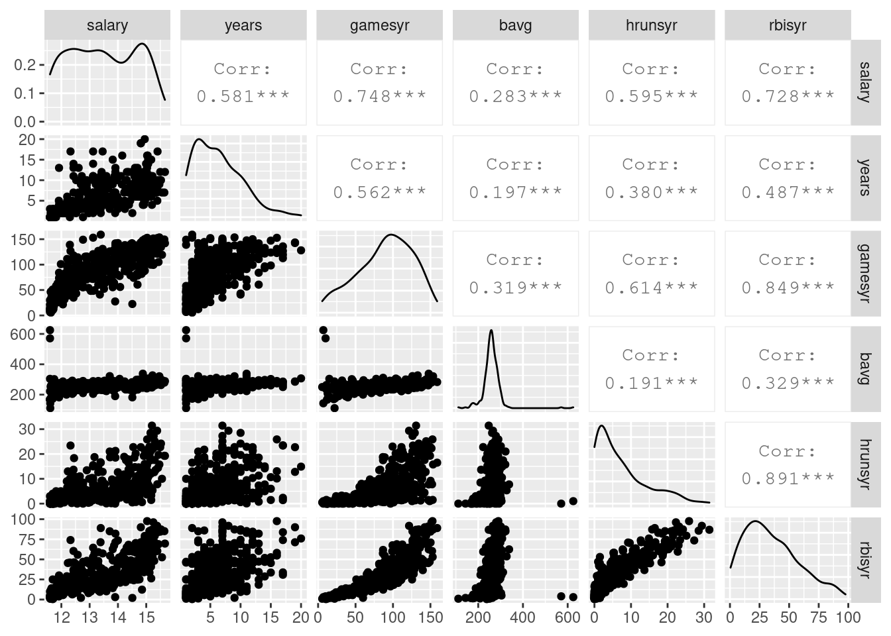

다중 선형 회귀에서 특징 변수 선택
선형 회귀에서 오컴의 면도날 원리는 경쟁하는 모형 혹은 모델 간에 보다 적은 수의 특징 변수를 가진 모형을 선택하는 것이 낫다는 것으로 풀어볼 수 있다. 이 원리는 과적합 문제와 연관된다. 데이터 과학에서 가장 주의해야 할 것이 과적합인데 특징 변수가 많을 수록 그 위험이 커지기 때문이다. 지금까지 보지 못 한 새로운 데이터가 등장하였을 때 특히 문제가 된다. 오컴의 면도날 원리를 적용하기 위해서는 특징 변수를 제거해도 회귀 성능이 크게 손상되지 않는다는 점을 확인할 필요가 있다. 이 글에서는 모형 비교를 위한 성능 지표로써 F-검증(F-test) 식과 AIC(Akaike Information Criterion) 식이 어떤 의미를 가지는지 살펴본다. 나아가 lasso 방법과 어떻게 연관되는지 논한다.
EDA: 데이터 관찰
Wooldridge의 MLB1 자료는 47 변수의 353 데이터로 구성된다[2]. 그 중 응답 변수를 포함한 6개만의 변수로 분석을 진행한다. 변수 명과 의미는 다음과 같다.
- salary: 1993년도 연봉 - 응답 변수
- years: 메이저리그 경력
- gamesyr: 연간 출장 게임 수
- bavg: 타율
- hrunsyr: 연간 홈런 수
- rbisyr: 연간 타점
library(tidyverse)
library(tidymodels)
library(wooldridge)
library(knitr)
data("mlb1")
mlb <- mlb1 %>%
select(salary, years, gamesyr, bavg, hrunsyr, rbisyr)
head(mlb) %>% kable(caption = "Selected variables of MLB1 dataset")| salary | years | gamesyr | bavg | hrunsyr | rbisyr |
|---|---|---|---|---|---|
| 6329213 | 12 | 142.08333 | 289 | 19.250000 | 69.66666 |
| 3375000 | 8 | 114.75000 | 259 | 9.125000 | 42.75000 |
| 3100000 | 5 | 150.20000 | 299 | 9.200000 | 71.00000 |
| 2900000 | 8 | 132.00000 | 245 | 13.375000 | 52.62500 |
| 1650000 | 12 | 99.66666 | 258 | 10.333333 | 45.08333 |
| 700000 | 17 | 119.52941 | 286 | 2.352941 | 33.76471 |
library(GGally)## Registered S3 method overwritten by 'GGally':
## method from
## +.gg ggplot2mlb %>%
mutate(salary = log(salary)) %>%
relocate(salary) %>%
ggpairs()
모든 변수가 수치형이며 산점도 및 상관계수가 그림에 표시되어 있다. 응답 변수 salary는 log처리하였다. 리그 경헙 변수는 years와 gamesyr이며, 타격 능력에 관한 변수는 bavg, hrunsyr, rbisyr이다. salary와 bavg의 상관계수가 0.283으로 가장 낮은 반면, salary와 rbisyr의 상관성은 높다. 득점 찬스를 살려서 팀의 승리에 기여할 수 있는 안타만이 중요하다고 추축 할 수 있다. 특징 변수 사이 rbisyr와 hrunsyr의 상관계수가 0.891로 높은 것은 회귀에서 문제가 될 수 있는 부분으로 주의가 필요하다. 산점도에서도 이 공선성을 확인할 수 있다. 이 변수들은 장타력이 있는 선수가 높은 타점을 올릴 수 있다는 점을 보여준다.
선형 회귀
특징 변수 5개를 모두 사용하여 모델을 구성해 보자. 변수에 대한 전처리는 BoxCox와 표준화를 수행하였다.
mod_lm <- linear_reg() %>%
set_engine("lm")
rec <- recipe(salary ~ ., data = mlb) %>%
step_BoxCox(all_numeric()) %>%
step_center(all_numeric()) %>%
step_scale(all_numeric())
wf_F <- workflow() %>%
add_model(mod_lm) %>%
add_recipe(rec) %>%
update_formula(log(salary) ~ years + gamesyr + bavg + hrunsyr + rbisyr)## Warning: The workflow has no formula preprocessor to remove.wf_F_fit <- fit(wf_F, data = mlb)
F_fit <- wf_F_fit %>%
pull_workflow_fit()
F_fit %>%
tidy() %>%
kable()| term | estimate | std.error | statistic | p.value |
|---|---|---|---|---|
| (Intercept) | 11.1924183 | 0.2888229 | 38.7518448 | 0.0000000 |
| years | 0.0688626 | 0.0121145 | 5.6842952 | 0.0000000 |
| gamesyr | 0.0125521 | 0.0026468 | 4.7424408 | 0.0000031 |
| bavg | 0.0009786 | 0.0011035 | 0.8868108 | 0.3757950 |
| hrunsyr | 0.0144295 | 0.0160570 | 0.8986417 | 0.3694667 |
| rbisyr | 0.0107657 | 0.0071750 | 1.5004590 | 0.1344049 |
statistic 항은 t값을 의미하고 그에 대한 p.value도 정리되어 있다. 다중 선형 회귀에서 p값은 주의하여 보아야 한다. 타격에 관한 변수 모두 p값을 보면 모두 큰 값을 가지지만 그 변수를 간단하게 제거할 수는 없다. 그 변수의 영향이 다른 변수에 녹아 있을 수 있기 때문이다. 타격 변수들을 정말 제거할 수 있는지 F-검정을 통하여 확인해보자.
F-검정
타격 변수의 영향은 없다고 볼 때 영가설은 다음과 같다.
\[H_0: \beta_{\text{bavg}} = \beta_{\text{hrunsyr}} = \beta_{\text{rbisyr}} = 0\]
타격 변수들을 제거하여 축소 모형 R(Reduced)이라고 정의한 후 적합을 수행한다.
# reduced model
wf_R <- wf_F %>%
update_formula(log(salary) ~ years + gamesyr)
R_fit <- fit(wf_R, data = mlb) %>%
pull_workflow_fit()
tidy(F_fit) %>%
mutate(model = "Full") %>%
add_row(tidy(R_fit) %>% mutate(model = "Reduced")) %>%
pivot_wider(id_cols = term, names_from = model, values_from = estimate) %>% kable()| term | Full | Reduced |
|---|---|---|
| (Intercept) | 11.1924183 | 11.2238039 |
| years | 0.0688626 | 0.0713180 |
| gamesyr | 0.0125521 | 0.0201745 |
| bavg | 0.0009786 | NA |
| hrunsyr | 0.0144295 | NA |
| rbisyr | 0.0107657 | NA |
타격 변수를 제거하였기 때문에 절편이나 경험 변수들의 \(\beta\) 값은 조금씩 바뀌었다. anova 함수를 이용하여 F모델과 R모델을 F-검정으로 비교한다.
anova(F_fit$fit, R_fit$fit)## Analysis of Variance Table
##
## Model 1: ..y ~ years + gamesyr + bavg + hrunsyr + rbisyr
## Model 2: ..y ~ years + gamesyr
## Res.Df RSS Df Sum of Sq F Pr(>F)
## 1 347 183.19
## 2 350 198.31 -3 -15.125 9.5503 4.474e-06 ***
## ---
## Signif. codes: 0 '***' 0.001 '**' 0.01 '*' 0.05 '.' 0.1 ' ' 1anova의 결과로부터 F=9.55로 유의 수준 1%를 한참 넘어간 것을 알 수 있다. 이것은 Model_1(Full)와 Model_2(Reduced) 모델 간에 영 가설을 기각해야 한다는 것을 뜻한다. 다르게 표현하면 이 변수들 중 살릴 수 있는 항이 있다는 것이다. 여기에서 F값은 무슨 의미인데 위와 같이 해석하는 것일까?
모형 비교를 위한 F
분산 분석은 새로 도입한 변수가 오차 구조에 어떤 영향을 끼치는지 살펴보는 해석 방법이다. 일원 분산 분석의 경우 처치(treatment)의 영향, 회귀 분석의 경우 특징 변수의 영향을 따져볼 수 있다[4]. 이제 회귀 문제에서 분산 분석이 어떻게 되는지 살펴본다.
잔차를 \(\hat u = y - \hat y\)이라고 정의 하자. 축소 모델의 잔차 제곱합 \(SSR_R\) (Sum of Squared Residuals of the Reduced model) 값은 추가 설명 변수로도 줄일 수 없는 잔차 제곱합(\(SSR_F\))과 그 제곱합들의 차이로 분해할 수 있다. 샘플의 분산 \(\sigma^2\)에 대하여 \(SSR \propto df \sigma^2\)라고 가정하자. \(SSR_R - SSR_F \propto (df_R - df_F) \sigma^2\)이고, 이 식을 \(SSR_R \propto df_R \sigma^2\)로 나누면 다음과 같다.
\(\frac{SSR_R - SSR_F}{ SSR_F } \approx \frac{df_R - df_F}{df_F}\)
모델 편향이 너무 커져서 자유도의 이득 \(df_R - df_F\) 보다 잔차 제곱합이 커지게 되면 다음 부등호가 성립된다.
\(\frac{SSR_R - SSR_F}{ SSR_F } > \frac{df_R - df_F}{df_F}\)
자유도는 특징 변수 차에서 \(\Delta df = df_R - df_F\) 얻는다. 이를 이용하면 다음 F비가 정의된다.
\(F_{\Delta df, \; df_F} = \frac{(SSR_R - SSR_F) / \Delta df}{ SSR_F / df_F}\)
F분포에서 사전에 정한 임계치 이내인 경우 줄이고자 하는 특징 변수의 효과가 없다는 영가설을 채택한다. 즉, 변수 제거를 진행할 수 있다. 이전 예제와 같이 임계치를 벗어난 경우 특징 변수 모두가 효과가 없다고 볼 수 없다.
F-검정 개념의 확장
F-검정을 이용하여 특징 변수 집합의 효과 유무를 판단해 보는 것은 유용하다. 모든 변수를 제거하여 모형을 줄일 수 없다면 어떤 변수를 선택해야 하는지 결정하고 그 효과의 크기를 파악하는 일이 남아있다. 이것은 1차적인 유용성이다. F-검정 논의에서 우리는 중요한 아이디어를 갖게 된다. 바로 잔차와 자유도를 나란히 쓸 수 있다는 점이다.
\(SSR_R \approx SSR_F + \alpha \Delta df \sigma^2\)
단, \(\alpha\)는 비례 상수이다. 특징 변수를 추가하면 SSR은 항상 줄어들지만 그 대가로 자유도가 벌칙으로 들어오는 식이 된다. 기준 모델 R에 대하여 특징 변수를 더한 모델을 비교할 수 있게 된 것이다. 이 개념은 AIC 식에서는 추가된 자유도 \(d\)에 대하여 다음과 같이 정리된다.
\(AIC = \frac{1}{n \hat \sigma^2} (RSS + 2 d \sigma^2 )\)
BIC에서는 다음과 같이 표현된다.
\(BIC = \frac{1}{n} (RSS + \log (n) d \sigma^2 )\)
F-검정 논의 후에 비로서 AIC나 BIC식은 절편 외 모든 변수를 제거한 모델을 기준으로 비교하는 식임을 분명하게 알 수 있다. 이 개념은 lasso로도 확장된다. 변수들 정규화 하면 회귀 계수의 크기는 \(|\beta_j| \sim O(1)\) 일 것이고 자유도 \(d\)를 계수의 합 \(\sum_{j=1}^d |\beta_j|\) 식으로 기술해 볼 수 있다. lasso는 다음과 같은 문제를 푸는 것이다.
\(\min_{\beta_j} RSS + \lambda \sum_{j=1}^d |\beta_j|\)
맺으며
선형 다중 회귀에서 변수 결정에 유용하게 쓸 수 있는 F-검정을 살펴보았다. 이 논의에서 얻을 수 있는 잔차 합과 자유도의 관계가 모형 비교 기준 AIC등을 만드는데 어떻게 쓰였는지 lasso로 어떻게 확장되었는지 확인해 보았다. lasso는 변수 결정에 매우 중요한 방법이므로 차후에 다시 살펴보도록 하겠다.
참고
- S.F. Alteryx, Simple is Best: Occam’s Razor in Data Science, https://community.alteryx.com/t5/Data-Science/Simple-is-Best-Occam-s-Razor-in-Data-Science/ba-p/355159
- G. James, D. Witten, T. Hastie, R. Tibshirani, 역자 마이클, 가볍게 시작하는 통계학습, 6.1 부분집합 선택, 루비페이퍼, 2016
- Wooldridge, Introductory Econometrics, 7e, 4-5 Testing Multiple Linear Restriction: The F-test, 2019
- 호그, 매킨, 크레이그, 박태영 옮김, 수리통계학 개론, 7판, 9장. 정규 모형에 대한 추론, 경문사, 2018